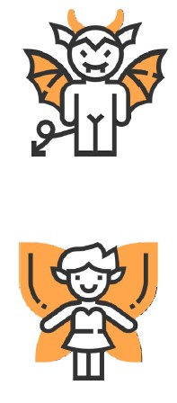
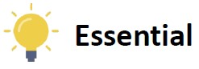
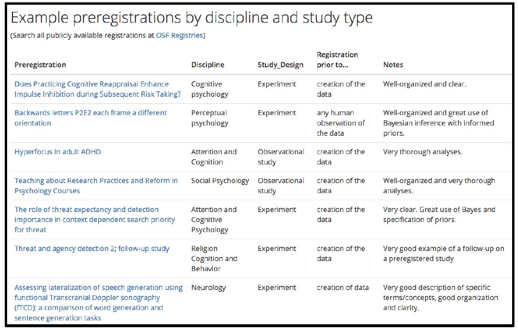

Forschungsorientierte Praktikum I – Grundlagen der Forschung
Preregistration - Advocatus Diaboli Game
![]()
Advocatus Diaboli

But…
… preregistration keeps me from conducting exploratory research!
- Improving your confirmatory research does not mean that you have to refrain from doing exploratory research
- You can also preregister your exploratory research (e.g., planned analysis methods)
Advocatus Diaboli
But…
… preregistration takes so much time!
- Actually it might even save you time during data analysis / interpretation.
- Preregistration mostly changes the order of the research process (e.g., think about how to analyze your data before / after you collect them).
Advocatus Diaboli
But…
… someone will steal my ideas!
- On the contrary. By preregistering your ideas you mark them as yours! If anyone still dares to steal them, it will be very easy to point this out as scientific misconduct.
- On some repositories (e.g., OSF), you can put an embargo on the preregistration. Then the preregistration is not publicly visible for a period of up to 4 years.
Advocatus Diaboli
But…
… what if I (or my students) make mistakes in the preregistration?
- Everyone makes mistakes, no need to be embarrassed!
- You can always deviate from your preregistered analysis if you give a good justification.
- If you make your preregistration open and someone finds a mistake, consider yourself lucky because this spares you finding it out when it is too late.
Advocatus Diaboli
But…
… someone could preregister multiple hypotheses and take the preregistration that fits the data best!
- That would be easy-to-spot scientific misconduct (compared to not-so-easy to spot HARKing without prereg)
- If more than one hypothesis is preregistered you will need a lot of luck that you have a “perfect-fit” preregistration
Advocatus Diaboli
But…
… people preregister stuff and then deviate significantly from the preregistration. What is it good for then?
- As a reviewer, it should make you vigilant about the quality of the paper → require justifications for deviations from the preregistration
- As a reader, you will be able to judge the quality of results (do they come from confirmatory or exploratory research?)
- It helps you to spot QRPs.
Advocatus Diaboli
But…
… I am doing qualitative research and none of the quantitative templates fits my way of working!?
- That the templates do not fit perfectly does not mean you cannot conduct a preregistration.
- Try to explain: What are your hypotheses? How do you want to investigate them? What will your data look like? How do you plan to evaluate the data? → Try to minimize degrees of freedom and you have met the goal.
Elements of a preregistration
1. Hypotheses
- Describe hypotheses as relationships between variables
- Describe shape of interaction effects
- Describe manipulation checks (or why they are not included)
- Figures / tables to describe interaction effects
- Rationales / theoretical frameworks to justify the hypotheses
van t‘Veer & Giner-Sorolla (2016)
Elements of a preregistration
2. Design- List, based on your hypotheses,
- Independent variables (describe variable, all levels, between- or within-person?)
- Dependent variables
- Third variables (covariates, moderators, control variables etc.)
van t‘Veer & Giner-Sorolla (2016)
Elements of a preregistration
3. Planned sample- Pre-selection rules (e.g., age limits)
- Where, from whom, and how will the data be collected?
- Justify planned sample size (power analysis or Bayesia design analysis)
- Describe data collection termination rule
van t‘Veer & Giner-Sorolla (2016), Schönbrodt & Wagenmakers (2017)
Elements of a preregistration
4. Exclusion criteria- Describe all anticipated exclusion criteria, e.g.
- Missing, erroneous, overly consistent responses
- Failing check-tests or suspicion probes
- Demographic exclusions
- Data-based outlier criteria
- Method-based outlier criteria (e.g., too long response times)
- Set fail-save levels of exclusion at which whole study needs to be stopped, altered, and restarted
van t‘Veer & Giner-Sorolla (2016)
Elements of a preregistration
5. Analysis plan- Describe statistical analyses that test hypotheses. For each, include
- Relevant variables and how they are calculated
- Statistical technique
- Each variable‘s role in the technique (e.g., IV, DV, covariate, …)
- If covariates are used: Rationale for using them
- If using techniques other than NHST, describe criteria and inputs toward making conclusions about your hypotheses
van t‘Veer & Giner-Sorolla (2016)
Elements of a preregistration
5. Analysis plan- Specify contingencies and assumptions, such as
- Method of correcting for multiple testing
- Method of missing data handling
- Anticipated data transformations
- Assumptions and assumption checks for analyses and alternative plans for data analysis if assumptions are not met
van t‘Veer & Giner-Sorolla (2016)
Elements of a preregistration
6. Additional stuff- For exploratory analyses: “We don‘t have any hypotheses”
- Transparency statement: How will research output be shared?
- Conditional safeguards: What will happen if…?
Lin & Green (2016)
Preregistration templates
Recommended:
- The Preregistration for Quantitative Research in Psychology Template (PRP-QUANT) was developed in a joint effort by a task force composed of members of the APA, BPS, DGPs, the COS, and ZPID.
- https://prereg-psych.org/index.php/rrp/templates
Preregistration templates (alternatives)
A curated list of high quality preregistrations

Credentials
The creation of this workshop material was partially funded by the Berkeley Initiative for Transparency in the Social Sciences (BITSS) Catalyst Program. For more information, please visit www.bitss.org, sign up for the BITSS blog, and follow BITSS on Twitter @UCBITSS. We also kindly thank the LMU GraduateCenter for their support.
These slides were created by Angelika Stefan, Julia Brandt, and Felix Schönbrodt. The work is licensed under a Creative Commons Attribution 4.0 International License. That means, you can reuse this slides in your own workshops, remix them, or copy them, as long as you attribute the original creators.

End
Contact
- @nicebread@scicomm.xyz
- ed.uml.ysp@tdorbneohcs.xilef
- https://www.nicebread.de
- https://github.com/nicebread